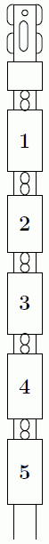
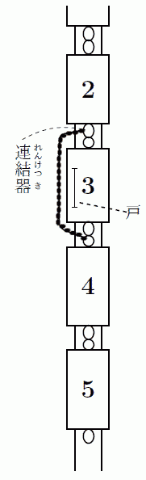
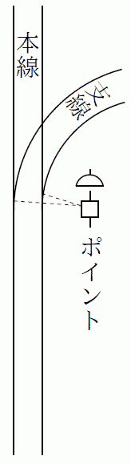
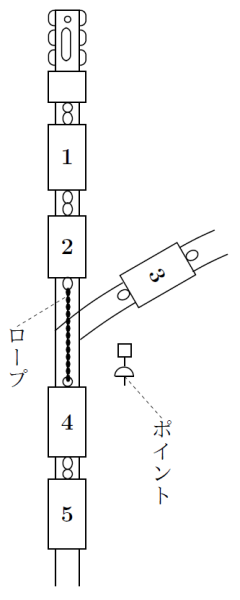

雲の上の怪物
少年探偵団の
その温泉を、仮に
その温泉のトキワ館という旅館の主人が、井上君のおじさんなので、小林団長と野呂君をさそって、五日ほど滞在する用意でやってきたのです。
井上君のおとうさんは、もとボクシングの選手だったので、井上君も、ときどきボクシングをおそわることがあります。生まれつきからだが大きくて力が強いうえに、ボクシングの手まで知っているのですから、学校でも、だれも井上君にかなうものはありません。
野呂一平君は、ノロちゃんというあだなでよばれていますが、からだの動かしかたがのろいわけではありません。なかなか、すばしっこいのです。しかし、やせっぽちで力もなく、そのうえ、すこし、おくびょうなのです。
そんなおくびょうものが、どうして少年探偵団にはいったかといいますと、ノロちゃんは、小林団長を、ひじょうに尊敬しているので、どうしてもはいりたいといって、きかなかったからです。小林君も、ノロちゃんがすきですし、おくびょうだけれどもすばしっこいのと、だれにもすかれる、あいきょうものなので、団員に入れることにしたのです。
三人がトキワ館につきますと、井上君のおじさんや、おばさんは「よくきた、よくきた。」といって、ひじょうに、かんげいしてくれました。
トキワ館のそばに、岩をくんだ
そのとき、おきゅうじをしてくれたのは、よくしゃべる女中さんで、いろいろ話してくれましたが、そのうちに、みょうなことをいいだしたのです。
「あんたがた、少年探偵団だってね。そんならばちょうどいい。いまこの村に、おっかねえことが、おこってるだよ。おまわりさんでも、どうにもできねえような、おっかねえことがよ。」
女中さんは、いなかの人ですから、ことばがへんですが、いみがわからないほどではありません。
三人の少年はそれを聞くと、にわかに、からだがシャンとしたような気がしました。じつはそういう話を、待ちかまえていたからです。
「おっかないって、いったい、どんなことですか。」
小林団長が、ひざをのりだすようにしてたずねました。
「それがね、わけがわからねえだよ。なんでも、雲の上に、おっかねえばけものがいて、わるさをするっていうのよ。」
いよいよ、おもしろくなってきました。
「わるさって、どんなわるさをするんです。」
「雲の上から、でっかい手が、ニューッとおりてきて、ニワトリや畑のものをつかんでいくんだって。牛や馬でも、つかみころされたことがあるくれえよ。」
「ねえさんは、その大きな手を、見たことがあるの？」
「いんや、わしは見ねえけんど、大ぜい見た人があるだよ。そのばけものの腕は、ふたかかえもあるマツの木のような、でっけえ腕だとよ。」
三人の少年は、顔を見あわせました。いったい、そんなばかなことが、あるものでしょうか。雲の中から、巨人の腕がニューッとあらわれて、いろんなものをつかんでいくなんて、いままで聞いたこともない、へんな話です。
「ねえさんは、そんなことをいって、ぼくらをおどかすんだろう。東京の子どもは、山の中のことを、なんにも知らないと思って、おどかしているんだろう。」
ノロちゃんが、にやにや笑いながらいいました。ほんとうは、すこしこわくなってきたのですが、笑い顔でごまかしているのです。すると女中さんは、しんけんなちょうしで、
「いんや、おどかしでねえ。なんでわしが、おどかしなんかいうもんか。ほんとのこったよ。だがね、この話をしちゃいけねえって、だんなさんにいわれてるだ。そんなうわさがたてば、温泉がさびれるだから、いっちゃいけねえってね。だが、あんたたち少年探偵団だから、わし、ちょっといってみただ。だからよ、これ、ほかのお客さんに話すでねえよ。わしが、しゃべったことがわかると、だんなさんにしかられるだからね。」
少年たちは、もっと、いろいろ聞きだそうとしましたが、女中さんは自分で見たわけではないので、くわしいことは、わかりませんでした。
そのあくる日、井上君がおじさんにあったとき、女中さんから聞いたといわないで、それとなくたずねてみますと、おじさんは、こまったような顔をして、
「もう一郎君の耳にはいったのかい。ばかばかしい怪談だよ。雲の上から巨人の手が出て、いろんなものをつかんでいくなんて、そんなことが、信じられるかい。きっと、どろぼうがいるんだよ。いろんなものをぬすんでおいて、そんな、巨人のうわさをいいふらし、自分のつみをのがれようとしているんだよ。」
「じゃ、おまわりさんが、しらべればいいんですね。この村にだって警察があるんでしょう。」
井上君がいいますと、おじさんは、うなずいて、
「むろんあるさ。警察分署があって、四―五人のおまわりさんがいる。このあいだから、いっしょうけんめいに、しらべているんだが、まだ、どろぼうはつかまらない。じつにこまったことだ。」
と、ためいきをつくのでした。
天にのぼる白犬
ところが、井上君のおじさんの考えは、まちがっていたことが、だんだんわかってきました。雲の中からあらわれる巨人の腕は、けっして、でたらめなうわさではなかったのです。そして、ついに、少年探偵団員である井上君とノロちゃんとが、そのおそろしいできごとを、まのあたりに見ることになるのです。
温泉についたあくる日の夕がた、三人の少年は、また野天ぶろにはいっていました。どんよりとくもった日で、まだ五時をすぎたばかりなのに、あたりは夕やみにとざされ、遠くの方は見えないほど、暗くなっていました。
はじめは三人きりで湯につかっていたのですが、しばらくすると、野天ぶろの岩のむこうから、ひとりのおとなの人がはいってきました。四十五―六に見える、よく太った、りっぱな人です。トキワ館にとまっている東京の客のようでした。
その人は、きものをぬいで湯にはいると、ひとりでジャブジャブやっていましたが、三人の少年の方を見てニッコリ笑うと、なつかしそうに話しかけてきました。
「きみたち、東京からきているんだね。わたしも東京だよ。この温泉は、しずかでいいね。きみたち、いつまでいるの。」
「四―五日いるつもりです。」
小林君が、こたえました。
「それじゃ、山のぼりをするといいんだが……しかし、用心したほうがいいよ。なんだか、へんなうわさがあるからね。」
その人は、みょうな顔をして、三人の少年を、じろじろ見くらべながらいうのでした。
「へんなうわさって？」
小林君は、たぶんあのことだろうと思いましたが、知らぬふりでたずねてみました。
「雲の中から、巨人の腕が出てくるんだ。まだ人間はやられないが、動物は、ずいぶんやられているらしい。その大きな腕で、牛でもなんでも、つかんでいくんだって。」
「それ、ほんとうでしょうか。いなかの人は、迷信ぶかいから、つまらないことから、そんなうわさがひろがっているんじゃないでしょうか。」
井上君がいいますと、その人は、しばらくだまっていましたが、なにか、おそろしそうに、まっ黒にくもった空を見あげました。もう、あたりはいよいよ暗くなって、湯につかっている、おたがいの顔も、ぼんやりとしか見わけられないほどです。
「わたしも、さいしょは、そう思った。しかし、鳥小屋がこわされて、ニワトリが、いなくなった家が、なんげんもあるんだし、牛が、高いところからおとされでもしたように、足をおって、死んでしまったこともあるし、畑の土が、たたみ一
そういって、その人は、また暗い空を、じっと見あげるのでした。
「もう出ようよ。そして、部屋へ帰ろうよ。ぼく、なんだか、寒くなってきた。」
ノロちゃんが、暗くなったあたりを見まわして、泣きだしそうな声を出しました。
「うん、早く、部屋へ、はいったほうがいい。巨人の腕があらわれるのは、いつも夜だからね。夜は、外へ出ないほうがいいよ。」
そこで少年たちは、野天ぶろからあがって、岩の間でからだをふいて、服をきましたが、男の人は、お湯のまん中に立ったまま、さっきから、ずっとむこうの方の空を見つめていました。まるで、くいいるように、その方ばかりを見つめているのです。
少年たちは、それに気がつくと、なんだかゾーッとして、思わず自分たちも、その方角を見ました。
「ごらん。あれを、ごらん。」
男の人が、手をあげて、空の一方を指さしました。まるで、ないしょ話でもするような、ひくい声です。
空は、いちめんに、どす黒い雲に、おおわれていました。
「あの山と山との間だよ。」
その山の雲とのさかいめが、もう、見わけられないほど暗くなっているのです。
しかし、山と山との間らしく見えるところに、雲の中から、ボーッと、白っぽいもやのようなものがたれさがっていました。
「あれね、わかるだろう。なんだか大きな腕のように、見えるじゃないか。」
少年たちは、そのもやもやしたものを、見つめました。そういわれれば、いかにも、巨人の腕のような形です。そのでっかい腕が、雲の中から、だんだん地上へのびてくるように、思われるのです。
「ワーッ……。」
ギョッとするようなさけび声がおこりました。そして、井上君の腕を、グッと、つかんだものがあります。びっくりしてふりむくと、それは、ノロちゃんでした。ノロちゃんが、悲鳴をあげて、逃げだそうとしているのです。
そのとき、ノロちゃんと井上君とは、もう服をきていたので、すぐに逃げられるのです。小林君は、まだパンツをはいたばかりのところでした。
ノロちゃんが、むちゅうになって引っぱるものですから、井上君も走りだしました。
野天ぶろから旅館の建物までは、七―八十メートルもあります。しかも、そこは、両がわに大きな木が立ちならんだ、森のような道ですから、もうまっ暗で、足もとも見えないほどです。
ノロちゃんと井上君は、手をひいて、その暗やみの中をいそぐのでしたが、半分ほどいったときに、先にたっていたノロちゃんが、ギョッとしたように立ちすくんでしまいました。そして、ぶるぶるふるえているのが、井上君の手に、つたわってくるのです。
ノロちゃんは、なにを見て、そんなに、こわがっているのでしょう。ノロちゃんには、ものをいう力もないように見えました。井上君のほうでも、聞くのが、おそろしかったのです。
やがて、そのものが、井上君の目にも見えてきました。ボーッと白っぽい、大きなものです。それがスーッと、こちらへ近づいてくるのです。
ノロちゃんが、パッと、井上君のからだにしがみついていきました。
「なあんだ、犬だよ。大きな白犬だよ。」
五メートルほど近づいてきたので、やっとそれがわかりました。昼間、トキワ館の表で見た、大きな白い犬でした。
ノロちゃんは、犬とわかると、すっかり安心して、井上君からはなれ、てれかくしのように、えへ、えへ、と笑いだしました。
「ねえ、井上君、今のこと、小林さんにはないしょだよ。ぼくがふるえあがって、きみにだきついたなんて、いっちゃいやだよ。いいかい。」
ノロちゃんのことばが、おわるかおわらないかでした。とつぜん、すぐ目の前に、身の毛もよだつような、おそろしいことがおこったのです。
その大きな白犬が、キャンキャンと、まるで
とっさに、ノロちゃんが、井上君の大きなからだにしがみついたことは、いうまでもありません。ノロちゃんが、がたがたふるえているので、井上君まで、ふるえだすほどでした。
そのうちに、もっとびっくりするようなことがおこりました。
白犬が、地上をはなれて、スーッと、
「巨人の腕だ、巨人の腕だ……。」
ノロちゃんは、その方を見まいとして、顔を井上君の胸にくっつけて、ないしょ話のような低い声で、それを、くりかえしていました。
「巨人の腕だ、巨人の腕だ……。」
井上少年は、けっして、おくびょうではありませんが、すぐ目の前に、りくつでは考えられないことが、おこっているのですから、心のそこから、ゾーッとしないではいられませんでした。
さすがの井上君も、もう、逃げだす力もないのです。そのうえ、ノロちゃんにしがみつかれ、熱病のうわごとのように「巨人の腕だ、巨人の腕だ。」とささやかれるのですから、たまったものではありません。
井上君の目は、見まいとしても、その方に、くぎづけになっていました。
大きな白犬は、キャンキャンと、かなしいさけび声をたてながら、もがきにもがいているのです。そして、じりり、じりりと、上の方へ、引きあげられていくのです。
巨人の腕は、はっきりとは見えません。まっ白な犬ですから、犬だけがよく見えて、巨人の腕は、暗やみにとけこんで、ボーッとかすんでいるのです。
見つめていますと、やみの中に、やみとおなじような色の、なんだか、おそろしく巨大なものが、空の方から、グーッと、のびているように感じられます。
その黒い腕が、犬をつかんで、ぐいぐいと、引きあげていくのです。
死にものぐるいに、もがいている白犬の姿は、みるみる井上君の頭よりも高くなり、それからまだ、上へ、上へと、無限に、のぼっていきます。そして、ついには、その姿が見えなくなってしまいました。
ただ、はるか空のほうから、かなしげな白犬のなき声が、かすかに、かすかに、聞こえてくるばかりです。
井上君も、そのからだにしがみついているノロちゃんも、銅像にでもなったように、身動きもしませんでした。ちょうど、腰がぬけたのとおなじで、筋肉が、こわばってしまって、動こうとしても、動けないのです。
「おやっ、井上君とノロちゃんじゃないか。こんなところで、なにをしているんだい。」
とつぜん、うしろから声をかけられたので、ふたりは、とびあがるほどおどろきました。しかし、それでやっと、からだが動くようになったのです。
声をかけたのは、小林団長でした。
暗やみをすかして、その姿を見とどけると、ふたりは、いきなり小林君にかけよって、左右から、その手にとりすがりました。そして、ものもいわないで、旅館の建物の方へ走りだすのです。
「おい、きみたち、なにをそんなに、あわてているんだい。むやみに引っぱっちゃあ、あぶないじゃないか。」
小林君は、引っぱられるままに、走りながら、ふしぎそうに、たずねるのですが、ふたりとも、ひとこともこたえません。なにか、おそろしいものに、追っかけられてでもいるように、ただ、いそぎに、いそぐのです。
やっと、むこうに、トキワ館の部屋の、あかりが見えてきました。
「おい、どうしたんだよ。早く、わけをいいなよ。」
小林君が、しかるようにいって、グッと、ふみとどまったものですから、ふたりも、しかたなくたちどまりました。
「ああ、こわかった。ぼくは、今にも、巨人の腕につかまれるかと思うと、死にそうだったよ。」
ノロちゃんは、あかるくなったので、にわかに元気づいて、口がきけるようになりました。
「えっ、巨人の腕だって。」
小林君も、びっくりして聞きかえしました。
そこでふたりは、あかるい旅館の入口の方へ歩きながら、さっきのおそろしいできごとを、口々に、小林君に話して聞かせるのでした。
さらわれた少年
そのあくる日から、あの大きな白犬は、村にいなくなってしまいました。犬のかい主は、ずいぶん、さがしまわったのですが、どうしても見つけることが、できませんでした。
井上、野呂の二少年が、野天ぶろの帰りに見た、あの奇怪な事件は、けっして夢でもまぼろしでもなかったのです。巨人の腕は、ほんとうに、森の中へおりてきて、白犬をつかみあげていったのです。
でも、犬だったから、まだしあわせでした。もし、あのとき、井上君か、ノロちゃんか、どちらかがつかみあげられたら、どうだったでしょう。ふたりとも、それを考えると、ゾーッと、背中が寒くなるのでした。
巨人の腕は、動物や、畑のものをつかんでいくばかりで、人間はまだひとりも、やられていません。村の人たちは、いくら魔ものでも、人間には、おそれをなしているのだろうと、うわさをしていました。
ところが、白犬の事件から二日めの朝になって、巨人は、けっして、人間にえんりょなんかしていないことが、わかったのです。とうとう、人間がやられたのです。
矢倉温泉の近くに住んでいる、
幸ちゃんは、わんぱくもので、一日じゅう外で遊んでいる子でしたから、夜になるまでは、おとうさんも、おかあさんも、心配しませんでしたが、暗くなって、だんだん夜がふけても帰ってこないので、大さわぎになりました。
お友だちのうちや、ほうぼう聞きあわせましたが、どこにもいません。警察分署にもとどけました。
「ひょっとしたら、巨人の腕に、さらわれたんじゃあるまいか。」
そんなことをいいだす人もありました。村には、むかしから、てんぐにさらわれるという、いいつたえがありました。羽のはえた、てんぐという怪物が、空から舞いおりてきて、子どもをさらっていくというのです。
としよりの人たちは、巨人の腕を見たわけではありませんので、そんなへんなものよりも、まず、てんぐのことを考えました。そして、幸ちゃんは、てんぐにさらわれたのかもしれないと、うわさをするのでした。
ところが、けさになって、その幸ちゃんが、ヒョッコリ帰ってきたのです。しかし、ふつうの帰りかたではありません。村はずれの、山の登り口に、大きな森があります。その森の、高いシイの木の枝の上に、ひっかかっていたのです。
ひっかかるというのは、へんですが、たしかに幸ちゃんは、その高い枝の上に、横になって、のっかっていたのですから、下から見ると、ひっかかっているように見えたのです。
村の人が、朝はやく、その森をとおりかかると、上の方で、ワーン、ワーンと、こどもの泣き声がするので、びっくりしてさがしてみると、高い高い木の上で、幸ちゃんが泣いていることが、わかったのです。
そこで、村のきこりの、木のぼりの名人をよんできて、やっと幸ちゃんを、木の上からおろすことができたのですが、それを見ると、おかあさんは、ワッと泣きだしてしまいました。それほど、幸ちゃんは、ひどい姿になっていたからです。
服は、やぶれて、どろまみれになり、顔はどろと血で、おそろしくよごれ、手足は、きずだらけになっていたのです。
すぐに、うちへ連れ帰って、きずの手あてをしたり、ふろに入れたりして、やっと、おちついたときに、みんなで幸ちゃんをとりかこんで、たずねてみますと、幸ちゃんは、きのうの夜から今までのことを、ぼつぼつ話しました。
幸ちゃんは、きのうの夕がた、友だちといっしょに、山の方へ遊びにいっていたのですが、みんなとけんかして、ひとり山にのこっているうちに、日がくれてしまったのです。
あたりがまっ暗になったので、いそいで、うちに帰ろうと山をおりてきますと、とつぜん、サーッと、風がふいてきて、雲の中から、大きなマツの木のようなものが、落ちてきたというのです。
「
幸ちゃんは、そんなふうに話しました。この少年は、日ごろから、つくり話がうまく、また、その話しかたが、じつに、じょうずでしたが、こんどは、つくり話ではありません。ひと晩、うちに帰らなかったうえ、これほどひどいけがをして、子どもには、とてものぼれないような高い木の上に、ひっかかっていたのですから、だれも幸ちゃんの話を、うそだと思うものはありませんでした。
巨人の腕に、つかみあげられたときは、目がまわって、気をうしなってしまったが、ふと、目を開くと、高い空を、ヒューッ、ヒューッと、風のように、とんでいることがわかったそうです。
「きっと、巨人が手をふって、ノッシ、ノッシと歩いていたんだぜ。そんだから、巨人が手をふるたびに、おらのからだは、ヒューッと、前にいったり、ヒューッと、うしろへもどったりしたんだ。でっけえぶらんこに、乗ってるみてえだったぜ。」
幸ちゃんは目をまんまるにして、そのときのこわかったようすを話すのでした。
人間の何百倍もある巨人が、ノッシ、ノッシと歩いていく。その手に幸ちゃんが、つかまれている。なんという、おそろしいめにあったものでしょう。考えただけでも、気がとおくなるではありませんか。
空には、まるで銀の砂をまいたように、いっぱい星があったといいます。ゆうべは、空いちめんに、くもっていたのに、どうして星が見えたのでしょう。それは、巨人のせいが高いので、からだの半分が、雲の上に出ていたためかもしれません。また、下の方を見ると、まっ暗な中に、ところどころ、火の粉をこぼしたような、赤い光のかたまりが見えたそうです。それは、町や村の電灯の光だったのでしょう。
「おら、飛行機に乗ったことねえけんど、飛行機に乗れば、あんなふうにちげえねえ。おっかねえけんど、おもしろかったぜ。もう一度、巨人につかまれてえな。」
幸ちゃんは、だんだんちょうしにのって、そんなことまでいうのでした。それから、さんざん空をとびまわったあとで、森の木の上におとされたのだそうです。つかまれていた巨人の手が、パッと開いて、幸ちゃんのからだは、まるで石でも投げたように、ヒューッと風を切って、
二度めに気がついたときには、森の木のてっぺんに、ひっかかっていたのです。もう夜明けでした。巨人につかまれているあいだは、さけぶことも、ものをいうこともできなかったのですが、そのとき、やっと声が出るようになりました。そこで、幸ちゃんは、死にものぐるいの声を出して、泣きさけんでいたというのです。
三人の客
幸ちゃんの事件があったお昼すぎ、トキワ館の洋室の応接間に、三人のおとなと、三人の少年が集まって、事件のうわさをしていました。幸ちゃんが、巨人にさらわれた話は、またたくまに、村じゅうにひろがって、トキワ館のお客さんも、みんな、それを知っていたのです。
応接間に集まっていたのは、小林、井上、野呂の三少年と、白犬の事件があった夜、野天ぶろで知りあいになった東京からの客と、その友だちふたりです。
野天ぶろで知りあった人は、東京の自転車製造会社の重役で、
「ぼくたち三人は、あす東京へ帰るよ。べつに、巨人がこわくて、逃げだすわけじゃないがね。」
三谷さんが、小林君の顔をみて、笑いながらいいました。三人のおとなは、みんな、宿のゆかたにどてらをかさねて、長いいすに、ぐったりと腰かけているのです。
「これは、ここへきたときからの予定なんだ。あさって、東京に、どうしても出なければならない会があるのでね。」
三谷さんの友だちのひとりが、弁解するようにつけくわえました。すると、もうひとりの友だちが、
「きみたち少年探偵団の三人は、まだ、滞在しているんだね、だが、なるべく早く帰るほうがいいよ。いくら探偵団でも、巨人の腕には、かないっこないからね。ハハハ……。」
と、からかうのでした。しかし少年たちも負けてはいません。井上君は、肩をいからせて、
「おじさんたち、少年探偵団の歴史を知らないから、そんなことをいうんだよ。ぼくたちは今までに、ずいぶん怪物をたいじしてきたからね。青銅の魔人、透明怪人、宇宙怪人、みんな、おそろしい怪物なんだよ。」
と、じまんしました。小林団長も、それにつづけて、
「ぼくたちだけで、たいじしたんじゃない。ほんとうは明智先生なんです。おじさんたち、明智先生を知っているでしょう。」
「うん、新聞でね。きみたちは、あの名探偵の弟子なんだね。それで、こんどの巨人の腕の秘密を、とこうというわけか。」
「ええ、そうなんです。もし、ここに明智先生がおられたら、きっと、巨人の秘密を、とかれると思います。けっして、逃げだしたりなんかしないと思います。ですから、ぼくたち、もうすこしここにいて、やってみるんです。」
さすがに小林団長は、けなげなことをいいます。
「ふうん、感心、感心。まあ、せいぜいやってみるがいいだろう。だが用心するんだぜ。相手は、おっそろしく、でっかい巨人だからね。つかみころされないようにね。」
三谷さんが、またからかいました。
おくびょうもののノロちゃんは、部屋のすみの方で、青い顔をして、この話を聞いていましたが、そのとき、やっと、ふるえ声で口をはさみました。
「ぼく、どうしても、わからないな。そんなでっかい巨人なんて、この世界にいるんだろうか。キングコングやゴジラなんて、みんな、つくり話でしょう。動物でさえ、そんな大きなのはいないんだから、人間の巨人なんて、いるはずがないんだがなあ。」
「ハハハ……、ノロちゃんは、おくびょうもののくせに、いいことをいうね。それじゃきみは、おばけがこわくないのかい。」
三谷さんの友だちが、いじわるをいいました。
「うん、おばけはこわいよ。おばけなんて、いないことは、よく知ってるんだけど……やっぱり、こわいから、しかたがないや。」
それを聞くと、みんなが大笑いをしました。しかし、ノロちゃんは、まじめな顔で、
「まだわからないことがあるんだよ。腕だけで、からだのないやつってないでしょう。だから巨人には顔も、腹も、足もあるはずでしょう。ね、だから、そのでっかい足で、いろんなものを、ふんづけるはずじゃないかい。そういう、ふんづけたあとが、一つもないのがおかしいんだよ。」
と、もっともなことをいうのです。
「ハハハ……、そこがばけものだよ。巨人は、腕ばっかりで、からだがないのかもしれない。それにノロちゃんは、おとといの晩、犬がつかみあげられるのを、その目で見たんだろう。こんなたしかなことは、ないじゃないか。」
「うん。でも、巨人の腕は、よく見えなかったよ。まっ黒な腕だから、見えなかったのかもしれないけど。」
それから、またしばらく、巨人のうわさをしたあとで、みんなは明るいうちに、野天ぶろへはいろうといって、ぞろぞろと出かけました。
そのあくる日の午後、三谷さんたち三人は、東京へ出発しました。そして、その晩のことです。
十時半ごろでした。そのとき、小林君たち三人は、トキワ館の二階の八畳の部屋に、
「おい、井上君、ノロちゃん、なんだろう。ばかにやかましいね。」
「うん、へんだね。また、巨人の腕があらわれたんじゃないかしら。」
井上君が、ねむそうな声でこたえました。
「えっ、巨人の腕だって？」
ノロちゃんが、とんきょうな声をたてて、ピョコンと、ふとんの中からとびおきました。もう、がたがたふるえているのです。
「下へいってみよう。」
「うん、そうしよう。」
小林君と井上君とは、ねまきのまま、部屋を出ていきます。
「ぼくひとり、おいていっちゃあ、いやだよ。ぼく、こわいよう。」
ノロちゃんは、あわてて、ふたりのあとを追うのでした。
下の事務室には、大ぜいの人が集まっていました。まん中に駅員の服をきた人が立っています。そのまわりに、トキワ館の主人夫婦、
駅員が、なにかおそろしいニュースを、持ってきたらしいのです。
よく聞いてみますと、それはつぎのような、おどろくべき事件でした。
貨車昇天
巨人の腕は、動物や人間をさらったばかりでなく、こんどは、あの大きな重い貨物列車を、雲の上へつかみあげていったのです。キングコングやゴジラは、飛行機や電車をつかみましたが、巨人の腕も、あの怪獣たちと同じ力をもっているのでしょうか。
矢倉温泉の駅から、東京の方に近い第一番めの駅は、
その横目駅を、今夜の八時四十七分に出た貨物列車が、矢倉駅へ、九時につきました。蒸気機関車にひかれた、十五両連結の貨物ばかりの列車です。
その貨物列車の、機関車からかぞえて、七両めに、あるお金持ちが、借りきっている貨車が、つながれていました。そして、その貨車は、矢倉駅でつみおろしをすることになっていたのです。
そのお金持ちは、矢倉村の近くに、大きな別荘を建て、その中へかざるために、東京から、たくさんの美術品を、矢倉駅へ送ったのです。値打ちにして、何千万円という美術品です。
その美術品は、国鉄から私鉄への乗りかえ駅で、つみかえられましたが、そのときは、大ぜいの人が厳重に見はりをして、私鉄の貨車につみこみ、貨車の
そして、その貨車が、横目駅をぶじに通りすぎたことも、まちがいありません。
横目駅の駅長は、七両めの貨車に、貴重品がはいっていることをよく知っていましたから、その貨車には、とくべつに気をつけたのです。
封印のある貨車は、たしかに、七両めにつながっていました。駅長ばかりでなく、三人の駅員が、それを見たのです。
ところが、列車が九時に矢倉駅について、いざ、つみおろしをしようとすると、その封印つきの貨物車が、一両だけ、消えうせていました。十五両つなぎの列車が十四両になっていたのです。
矢倉駅の駅長はすぐに横目駅や、その前の駅へ電話をかけてたしかめましたが、どこの駅でも、たしかに十五両連結だったという答えです。
そして、封印つきの貨車が七両めにつながれていたことも、まちがいないというのです。
長い列車の、まん中の一両だけが、一つの駅からつぎの駅へいく間に、消えてなくなるなんて、人間の頭では、考えられないことです。鉄道はじまっていらい、一度も例のないことです。
機関士も
あの大きな貨車が、煙のように消えうせてしまうなんて、人間の知恵では考えられないことです。
この事件には、なにか、人間いじょうの力が働いているのではないでしょうか。
そこまで考えてくると、もうほかに答えはありません。
駅長も、警察分署長も、村長も、村のおもだった人たちも、すぐに「巨人の腕」のことを思いだしました。
あのばけものなら、人間にできないことも、やすやすと、やってのけるにちがいないのです。
「しかし、巨人の腕が、つかみとったとすれば、列車ぜんたいが、ひどくゆれただろうが、機関士も車掌も、それを感じていないのはへんだね。」
「そこが魔物だよ。人間の知恵では、考えられないことが、あのばけものには、ぞうさなくやれるのかもしれない。」
「だが、貨車を一つだけつかみあげたとすれば、七両めからあとの貨車は、連結が切れてしまうから、そこにとりのこされたはずじゃないか。」
「それが、やっぱり人間の知恵だよ。あの巨人なら、貨車をぬきとって、前の車とあとの車を、手ばやく連結することだって、わけはないかもしれない。
なにしろ相手は、でっかいやつだ。ちょうど、こどもが、オモチャの汽車をいじるようなもんだからね。」
そんな会話が、ほうぼうでくりかえされました。そして、村の人たちの八割までが「巨人の腕」のしわざにちがいないと、信じるようになったのです。
美術品の持ち主のお金持ちは、相手がばけものであろうが、人間であろうが、美術品をとりもどしてくれた人には、百万円のお礼をすると、警察分署長や村長に話し、それが村じゅうにつたわりました。
また、土地の新聞にも、そのことが、でかでかと書きたてられたのでした。
少年名探偵
そのあくる日の夕がたになっても、貨車紛失事件には、なんの新しい発見もありませんでした。さすがに警察分署長は、巨人の腕などという、怪談を信じていたわけではありませんから、本署とも連絡して、手をつくして、捜索したのですが、まったく手がかりがないのです。
その夕がた、分署長の
「なんどいっても同じことだが、こんなふしぎな事件は、生まれてはじめてですわい。貨物列車のまん中の、一両だけが消えてなくなるなんて。しかも、あの列車は、横目駅を出たのも、矢倉駅についたのも、時間表のとおりで、一分も、おくれちゃいない。貨車をとりはずすひまなんか、ぜったいになかったのじゃ。じつに、またふしぎな事件ですよ。どうやら、わしも、巨人の腕というやつを、信じそうになってきましたわい。」
分署長は、井上少年のおじさんのトキワ館の主人とは、
「いや、おさっししますよ。日ごろは平和な村で、事件がなくてこまるほどだが、こんなとほうもない大事件がおこっては、あんたも、たいていじゃありませんな。」
「うん、いなかの分署長には、手におえませんわい。警視庁の名探偵でも、きてくれなくっちゃね。ハハハ……。」
分署長の波野さんは、お茶をすすりながら、にが笑いをするのでした。
そこへ、バタバタと、あわただしい足音がして、井上少年がかけこんできました。
「おじさん、わかりましたよ。ぼくらの団長の小林さんが発見したんです。幸ちゃんってこどもね、あの子はわるものに、お金をもらって、みんなをだましていたんです。いまここへつれてきますよ。」
「え、なんだって？ 幸ちゃんが、うそをついていたんだって？」
おじさんと分署長の波野さんは、顔を見あわせて、おどろいています。
そこへ小林少年とノロちゃんが、あの森の木のてっぺんに、ひっかかっていた幸ちゃんというこどもをつれて、はいってきました。
「うん、佐多の幸ぼうじゃね。どうしたんじゃ。きみが、うそをついていたというのは、ほんとうか。」
波野さんが、やさしくたずねました。幸ちゃんは、制服姿の警部補を、じろりとうわ目で見て、うつむいてしまいました。そして、クシュン、クシュンと、鼻をすすって、だまりこんでいます。人の心を見ぬくことになれた波野さんには、幸ちゃんが、うそをいっていたということが、すぐにわかりました。
幸ちゃんがだまっているので、小林君が、わけを話しました。
「幸ちゃんは、うそつきの名人だそうですね。でも、こんどは、一晩、うちへ帰らなかったし、あんな高い木の上で泣いていたので、みんながほんとうだと思ったのです。だまされてしまったのです。ぼくは、井上君とノロちゃんが、白犬が空にのぼっていくのを見たときから、考えつづけていました。明智先生のやりかたをまねて、いっしょうけんめいに考えたのです。そして、巨人の腕の秘密を、といたのです。」
「なに、きみが、秘密をといたって？」
分署長さんは、信じられないというような顔つきで、小林君を見つめました。
「ええ、とけたつもりです。巨人のうわさは、みんな、つくり話です。わるものが、村の人たちをだましていたのです。
その秘密をとくのには、子どもの幸ちゃんをときふせて、はくじょうさせるのが、いちばん
ぼくは、持っているだけのお金をみんなやるからといって、幸ちゃんにたのみました。もし幸ちゃんが、うそをいってるのだったら、別荘のおじさんに、何千万円という、損害をあたえるばかりでなく、警察や、鉄道や、村の人みんなに、どれほどめいわくをかけるかわからない。きみが、はくじょうしても、けっして、みんなが、しからないようにたのんでやるから、といって、いっしょうけんめいに、ときつけたのです。」
「うん、えらい。さすがは明智先生の弟子じゃ。それで？」
分署長さんは、感心したように、ことばをはさみました。
「幸ちゃんは、二時間ぐらいたって、やっとはくじょうしました。わるものに、たくさんお金をもらって、あんなおしばいをやったのです。あの晩は、近くのお百姓の納屋の、わらの中で寝たんだそうです。そして、夜明けまえに、わるものに手つだってもらって、あの高い木のてっぺんへ、あがったのです。そのときわるものが、幸ちゃんの顔や手に、どろをぬったり、きずをつけたりしたんだそうです。そのまえに、幸ちゃんが空をとんだというのは、みんな、わるものに教えられた、つくり話だったのです。……幸ちゃん、ぼくがいまいったこと、ちがっていないね！」
すると、幸ちゃんは、うつむいたまま、また、クシュン、クシュンと、鼻をすすりながら、二度もうなずいてみせました。
「ふうん、そうだったのか。分署長のわしがそこへ気がつかなかったとは、じつにもうしわけがない。小林君、お礼をいいます。よくそこまでやってくれた。」
波野さんは、人のよい笑い顔で、心から小林君をほめてくれるのでした。そのとき、井上君のおじさんのトキワ館の主人が、口をはさみました。
「さすがは、少年探偵団の団長だね。おじさんも感心したよ。それじゃ、ほかのことも、きみには、わかっているんだろうね。ニワトリが盗まれたことだとか、牛が足をおったことだとか、畑に、大きな穴があいていたことだとか、それから、きみたちのうちふたりが見た、白犬が、つかみあげられたことだとか……。」
「みんな、うそっぱちですよ。」
小林君が、そくざにこたえました。
「ニワトリは、ちょうど巨人の腕がやぶりでもしたように、鳥小屋を大きくやぶって、盗んでいっただけですし、牛は、ただ、なにかで足をなぐって、立てないようにして、空からおとされたように見せかけたのだし、畑も、シャベルかなんかで、巨人がつかみとったようなあとをつけたのですよ。
それから、井上君とノロちゃんが見た白犬も、手品だったのです。きっと、こんなふうにやったのだと思います。わるものが白犬をつかまえて、黒い、ほそいひもか、針金でしばり、自分はあの森の、いちばん高い木のてっぺんにのぼって、ふたりが通りかかるのを待ちかまえていたのです。そして上からひもを引っぱって、白犬をつりあげて見せたのです。だから、井上君にもノロちゃんにも、巨人の腕は見えなかったはずです。気のせいで、なんだか黒い腕のようなものが見えたと思ったばかりですよ。ふたりとも巨人の腕の話をうんと聞かされていたので、うまくごまかされたのです。わるものは、ぼくたちに、あの白犬のつかまれているところを見せれば、こわくなって、早く東京へ帰るだろうと、思ったのでしょう。」
「ふうん、じつによく、すじみちがたっている。明智先生は、いい弟子を持たれたなあ。東京には、こんなかしこい子どもがいるかと思うと、いなか署長は顔まけじゃ。ウフフフ……。」
波野さんは、つくづく感じいったという顔つきで、また小林君をほめあげましたが、ことばをつづけて、
「ところで、そうなると、わしとしては、犯人をつかまえなければならん。小林君、きみは犯人を知っとるのかね。すくなくとも、幸ぼうは、犯人にたのまれて、ああいうことをやったのだから、犯人の顔を見ているはずじゃが……。」
これにも小林君は、すぐこたえました。
「犯人は変装していたと思います。ですから、幸ちゃんにもわからないのです。ぼくも、たしかなことはいえません。でも、あれではないかという、容疑者はあります。」
「なに容疑者まで、わかっとるのか。」
波野さんはもう、感心どころではありません。すっかり、おどろいてしまいました。
「まだいまのところ、うたがいだけです。ほんとうのしょうこはありません。でも、早くその容疑者をつかまえて、しらべてみる値打ちはあると思います。ですから、分署長さんだけに、お話します。もし、まちがっていたら、その人にもうしわけありませんからね。」
「いや、まいった、おとなもおよばぬ心づかいじゃ。小林君、わしは、年はきみの三倍もあるが、これからきみの弟子になりたいもんじゃね。うん、よしよし、廊下へ出て、そっと、きみの話を聞きましょう。」
そしてふたりは、なかのよい親子のように、廊下へ出ていきましたが、しばらくすると、波野さんは小林君の手をひいて、にこにこしながら、もどってきました。
「小林君は、重大なしょうこを、わしにくれました。それは、小林君が自分でとった、ある人物の写真じゃが、くわしいことは、まだいわないでおきましょう。ね、それがいいね、小林君。」
波野さんは、目じりに、いっぱいしわをよせて、かわいくてたまらぬというように、小林君の顔を見るのでした。
「ええ。」
小林君も、ニッコリして、分署長さんを見あげました。
ちょうどそのとき、げんかんのほうに、あわただしいくつ音がして、
「分署長さんは、こちらへきておられませんか。」
という声が、聞えてきました。
「ここにおいでじゃ。どなたです。」
井上君のおじさんがどなりますと、ひとりの警官が、応接間へとびこんできました。分署の警官です。
「分署長さん、たいへんです。あの貨車が見つかりましたっ。」
まだ若い警官は、暑くもないのにまっかな顔をして、汗を流しています。
小林少年の推理
「どこで見つかった？」
波野さんも、井上君のおじさんも、思わず、いすから立ちあがりました。
「森の中です。ごぞんじのように、横目駅と、矢倉駅の間に、
「で、中の美術品は？」
「かさばるものは、そのまま、のこってますが、持ちはこびのできる目ぼしいものは、すっかりなくなっています。近くの農家から、聞きこんだのですが、あの晩、そのへんを、トラックの通る音がしたということです。犯人がトラックで、美術品をはこんだらしいのです。」
「やっぱり、そうだったか、小林君が明察したとおり、巨人の腕じゃなかった。やっぱり犯人は人間だったね、……よしっ、それじゃ、きみ、いそいで本署へかけつけてくれたまえ。容疑者の手配だっ。そいつの写真がここにある。……ご主人、ちょっと。」
波野さんは、トキワ館の主人を手まねきして、警官と三人で、部屋を出ていきましたが、しばらくすると、主人とふたりだけが、もどってきました。さっきの警官は、写真を持って、横目町の本署へかけつけたのでしょう。
さすがに波野さんは、てきぱきと、事をはこびました。こんどは小林君が、感心する番でした。
波野さんは、部屋にもどって、いすにかけると、すぐに話しはじめました。
「ところで小林君、いまの巡査もいっていたが、進行中の列車から、どうして貨車をぬきとることができたか、これが、だれにもわからないのじゃ。横目駅でも、矢倉駅でも、みんなが頭をあつめて、研究したが、このなぞは、どうしてもとけない。
妖怪変化のしわざとでも考えるほかはないというのじゃ。小林君、いくらきみでも、この秘密はわかるまいね。」
「いいえ、わかっているのです。ぼくの推理は、この貨車の問題から出発したのです。貨車の秘密がとけたので、ほかのことも、みんなわかってしまったのです。」
波野さんも、井上君のおじさんも、こんどこそ、心のそこから、びっくりしてしまいました。いくら名探偵の弟子でも、進行中の列車のまん中から、一両だけ貨車をとりはずすなんて、そんな魔法をとくことができるのでしょうか。
「それじゃ、説明してごらん。いったい、どうしてあの貨車を、とりはずしたんだね。」
「ぼく、紙と鉛筆を持ってきます。絵を書かないとうまく話せませんから。」
小林君は、そういって、応接間をかけだしていきましたが、やがて、大きな白い紙と、鉛筆とを持って、もどってきました。
そして、その紙をテーブルの上にひろげ、絵を書きながら説明をはじめるのでした。
「わかりやすくするために、十五両でなくて、五両連結の貨物列車としますよ。そして、一番めから五番めまで、番号をつけておきます。

とりはずすのは、三番目の三号車ときめます。いいですか。そこで、この魔術をやるのには三人の人が、ひつようです。ちょうど、ここに、ぼくたち子どもが三人いますね。ですから、仮に、ぼくたち三人で貨車をぬきとるという、たとえ話で説明しますよ。まず、三人のうちで、いちばん力の強い人、ぼくたちでいえば井上君ですね。その井上君が、この支線のさいしょの駅で、列車がとまっているときに、機関士も車掌もまだのりこまないうちに、この三号車の、駅の方からは見えない側の戸をひらいて、中にしのびこむのです。
むろん夜ですよ。あの列車が、支線のさいしょの駅を出発したのは午後七時ですからね。
そのとき封印をきって、錠をねじあけるのですが、たとえば、ぼくならぼくが、井上君がしのびこんだあとで、貨車の戸をしめ、錠や封印の紙を、もとのようになおして、ちょっと見たのではわからないようにしておくのです。
井上君は、三号車にはいるときに、長い、じょうぶなワイヤロープのまるめたのを、かついではいるのです。太さが三センチもあるロープですから、子どもでは持てません。おとなでも、よっぽど力がないとだめです。ここでは、仮に井上君が、それを持てたとしておくのですよ。
さて、列車は、あの晩七時に出発しました。そして四つか五つの駅をすぎて、横目駅につきます。あれから登り坂になって、列車の速度がひどくにぶりますから、そのときを見はからって井上君は、ひじょうにむずかしい仕事を、やらなければなりません。いくら力が強くても井上君にはとてもできませんが、そういうことになれた、がんじょうな犯人ならば、できただろうと思うのです。
やっぱり井上君がやることにして、お話しますが、井上君は、さっき錠をやぶっておいた、駅のはんたいがわの戸をひらき、ロープのはしを、からだにくくりつけて、三号車の外がわに出るのです。貨車の外がわには、足がかりになるような、でっぱりが、かならずありますから、それをつたって、前の二号車との、連結器のところまで、たどりつくのです。
そして、連結器の上にまたがって、二号車の連結器の輪になったところへ、ロープのはしをとおしてねじりあわせ、その上から、細い針金でぐるぐるまきつけ、どんな力で引っぱっても、とけないようにするのです。これで一つ仕事がすみました。しかしまだあるのです。井上君はそこで、もとの三号車の中へもどって、こんどは、ロープのべつのはしをからだにくくりつけ、もう一度戸の外へ出て、うしろの四号車との、連結器のところまでたどりつき、まえと同じように、四号車の連結器にロープのはしをくくりつけるのです。そうするとこんなふうになります。

つまり、二号車と、四号車が、強いワイヤロープでつながれたことになるのです。そのロープは、三号車の駅の方から見えない側をとおっているので、ことに夜のことですから、めったに見つかる心配はありません。
それから、また、井上君は、両方の連結器のところへ、いかなければなりません。こんどは、ロープはもう、くくりつけてしまったから、なんにも持たないで、貨車の外をつたわっていくのです。そして、二号車と三号車の間の連結器と三号車と四号車の間の連結器をとりはずしてしまうのです。国鉄の連結器は、そんなにかってにはずせませんが、いなかの私鉄には、いまでも旧式な連結器が、ついているので、はずそうと思えば、はずれるのです。
これで三号車が、宙に浮いてしまいました。前の貨車にも、うしろの貨車にも、つながっていないのです。でも、うしろの四号車は、二号車からのロープで引っぱられているので、間にはさまっている三号車も、うしろからおされて、進むのです。」
大魔術
小林君の説明はつづきます。
「登り坂が、おわったところに、製材会社の支線があります。そこで、レールが二またにわかれているのです。そのそばに、レールをあっちへやったり、こっちへやったりするポイントがあります。ポイントは、ふつう、駅の構内にあるのですが、あの支線は駅からとおいので、レールのすぐそばにとりつけてありますね。絵に書けば、こんなふうです。

この支線とのわかれめのポイントのところに、三人の犯人のうちで、いちばんすばやいやつが、待ちかまえています。トラックにのって、さきまわりをしているのです。この役目は、ぼくでしょうね。ぼくが、井上君やノロちゃんより、すばしっこいかどうかわかりませんけれどね。
そこで、ぼくが、ポイントのところで待ちかまえていますと、むこうから、貨物列車がやってきます。坂を登りきったところですから、まだ、そんなに速力は出ていません。
ぼくは、ポイントのぼうをにぎって、いつでもたおせるように身がまえをします。機関車がレールのわかれめを、とおりすぎました。つぎに、一号車二号車、その二号車の車が、レールのわかれめを、とおりすぎたしゅんかんに、ぼくは、パッとポイントをたおします。すると、レールが支線の方につながるので、三号車は、本線をはなれて、支線の方へはいっていきます。
そして三号車が、わかれめをとおりすぎたしゅんかんに、ぼくはまた、ポイントをパッともとにもどします。そうすると、つぎの四号車の車は支線の方へまがらないで、まっすぐに本線を進んでいくわけです。この絵のとおりですよ。

ね、わかるでしょう。ほんとうに、いちかばちかの仕事です。だから、この役目は、すばやい人でなくてはつとまらないのですよ。そうして、三号車が支線にはいっても、二号車と四号車とは、ワイヤロープでつながれていますから、四号車からあとの貨車も、そのまま進んでいくのです。
三号車にいた井上君はどうするかといいますと、支線にはいるまえに、二号車のうしろに、とりすがっているのです。貨車のうしろには、列車の屋根へ登るための鉄ばしごが、とりつけてありますから、この鉄ばしごにすがりついているのです。
さて、ここで、ノロちゃんの役目があります。いやノロちゃんは、からだが小さいし、力もないが、ほんとうの犯人は、もっと大きくて、強いやつです。その犯人を、かりに、ノロちゃんとしますと、ノロちゃんは、支線のわかれめと製材会社との間にある森の中に、待っているのです。ノロちゃんも、ぼくといっしょに、トラックで、さきまわりをしていたわけですよ。そして、そのトラックも、支線の森の中にかくしてあるのです。
ぼくがポイントをたおして、支線に送りこんだ三号車は、いきおいがついているので、ぐんぐん進み、ちょうど森のへんで、速力がにぶってきます。ノロちゃんは、その貨車へとびついて、ブレーキをふむのです。
国鉄の列車は、みんな、圧縮空気のブレーキですが、いなかには、まだ足ぶみブレーキの貨車がのこっています。美術品のつんであったのは、その旧式の貨車だったのです。こんなふうに、貨車の横に、長い鉄のぼうがあって、人間が、その上にのって、ぐいぐいふめば、ブレーキがかかるようになっているのです。ノロちゃんは、そのブレーキをふんで、貨車を、森の中でとめる役です。
そこへ、ぼくもかけつけて、ふたりで、貨車の中の、めぼしい美術品をはこびだし、待たせておいたトラックにつみこみ、すぐに東京の方へ、出発するというわけです。
これで、目的をはたしたのですが、本線を進んでいる列車のほうに、まだ仕事が、のこっています。井上君は、それをやらなければなりません。
井上君は、二号車のうしろの鉄ばしごにとりすがったまま、矢倉駅の近くまでいきます。そして、機関車がブレーキをかけて速度をゆるめるのを待っています。長い貨物列車は、駅のずっとてまえから、ブレーキをかけるのです。で、機関車がブレーキをかけますと、二号車までは速度がおそくなります。ところが四号車からあとは、ロープにひかれているのですから、いきおいがついていて、ぐんぐん進みますから、前の貨車にドシンとぶっつかるわけです。
井上君は、それを待っているのです。そして、二号車と四号車とが、ぶつかってくっついたときに、二つの貨車の連結器を、ガチャンとはめて、両方の連結器にくくりつけてあったロープをとくのです。ほそい針金で巻いてあるのを、ペンチで、切りはなしてしまうのです。そして、ロープをレールの横へなげだしておいて、自分も列車からとびおり、ロープをエッチラオッチラと引っぱって、近くの木のしげみの中へかくれてしまうのです。
こうすれば、長い列車のまん中の貨車を一両だけ盗みだせるわけですよ……。
ああ、くたびれた。ぼくの説明は、これでおしまいです。話すと、ひどくややっこしいけれど、やってみれば、わりにかんたんかもしれませんよ。でも、ぼくらの力では、とてもできません。あの容疑者のような、大男たちでなくっちゃあ。」
やっと、小林君の長話がおわりました。
波野さんも井上君のおじさんも、しばらくの間だまりこんでいました。ものもいえないほど感じいってしまったのです。しばらくして波野分署長が、ためいきまじりに、口を開きました。
「ああ、わしゃ、はずかしくなったよ。こんな子どもが、これほどの推理をしようなんて。……ああ、明智先生はえらい。こんなりっぱな少年助手を、そだてなすったのだからなあ。」
それにつづいて、井上君のおじさんも、
「うん、わしは、じつは、少年探偵団なんて子どものあそびごとだと、けいべつしていたが、こういう、えらい団長といっしょにはたらいているのなら、一郎も、しあわせというもんだ。一郎、しっかりやるんだぞ。」
と、ほめそやすのでした。一郎というのは、井上君の名です。
さて、そのあくる日の夕がたのことです。波野分署長が、こおどりするようなかっこうで、トキワ館へとびこんできました。
「おい、小林君、小林君はいないか。犯人がつかまったぞ。」
大きな声で、どなりちらすものですから、小林君たち三人はもちろん、おじさんも、番頭さんや女中さんまで、玄関へ集まってきました。
「ほんとうに、つかまったのですか。」
小林君が、うれしそうに聞きますと、波野さんは、にこにこと、表情をくずしながら、
「うん、つかまった。わしはあれからすぐに、本署に連絡して、非常線をはってもらった。東京の警視庁へも報告した。すると、きょうの昼まえに、あの三人組が、東京で、警視庁の刑事たちにつかまったのだ。
美術品もすっかりもどった。別荘のご主人も大よろこびじゃ。おい、小林君、百万円はきみのもんだぜ。それから、県の警察署長から表彰状がもらえる。それにも
おい、小林君。わかったぞ。きみが、どうしてあの三人組に気がついたか、わかったぞ。『三人』ということじゃ。あの貨車どろぼうは、三人いないとできないということじゃ。ちょうど、その三人づれの東京の客が、あの日の昼間に帰っていった。帰ったと見せかけて、貨車どろぼうの用意にとりかかったのじゃ。
それにしても、きみがあの三人を、そっと写真にとっておいたのは、
もしあの写真がなかったら、なかなかつかまらぬところじゃった。なんにしても小林君、きみみたいな、ぬけめのない少年を、わしゃ見たことがないぞ。」
あまりほめられるので、小林君は、てれたように顔を赤くして、
「ええ『三人』だったということもあります。それから、白犬の事件のあった晩、三人の中のひとりが野天ぶろへはいってきて、巨人の腕の話をして、ぼくたちをこわがらせようとしたのです。そのときからぼくは、なんだかへんだなと、思っていました。それで、あの三人に、気をつけていると、いろいろあやしいことがあったのです。」
「うん、そうじゃろう。きみのような少年に、にらまれては、やつらも、運のつきじゃったのう。ワハハハ……。」
そのとき、どこからか電話がかかってきましたので、井上君のおじさんが、電話口に出ましたが、話を聞きおわると、にこにこして、三人の少年によびかけました。
「おい、
「少年探偵団の基金にして、明智先生にあずけます。そうすれば、探偵七つ道具だって、団員みんなに買ってやることができますからね。」
それを聞くと、井上君とノロちゃんが、両方から、小林団長に、すがりついていきました。
そして、声をそろえて、
「小林さん、よかったね。よかったねえ。」
といいつづけるのでした。